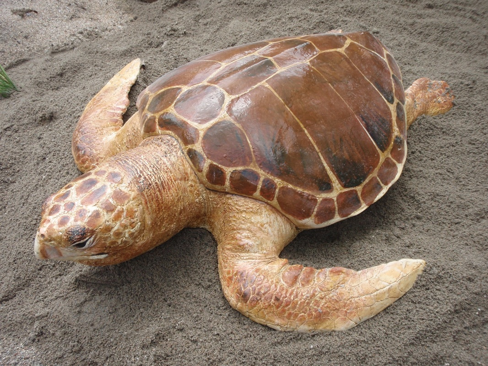

| Turtle Name | Information | Map |
|---|---|---|
The Green Turtle |
One of the biggest sea turtles and the sole |
|
Loggerhead Turtle |
The biggest hard-shelled turtle in the world is the loggerhead |
|
|
The Cheloniidae family of marine turtles includes |
|
Olive Ridley Turtle |
The smallest and most prevalent marine turtle in the world is the olive ridley (Lepidochelys olivacea). They weigh less than 50 kg and can reach a height of 80 cm. Olive ridley turtles have a heart-shaped carapace (upper shell) with 5 to 9 pairs of scutes and have an olive/grayish green color. An olive ridley's four flippers each have one or two claws. Olive ridleys come in a variety of sizes and shapes, with the biggest animals being found in West Africa. In the warm seas of the Pacific, Atlantic, and Indian oceans, olive ridley turtles can be found.The South Atlantic, Pacific, and Indian Oceans have tropical and warm-temperate zones where olive ridley turtles may be found. They have been discovered to live in coastal regions, including bays and estuaries, while being mostly pelagic. Olive ridleys may travel thousands of kilometers between their coastal breeding areas and pelagic feeding habitats. The balmy tropical seas of the Pacific Ocean are where you may see Olive Ridley turtles most frequently. They may also be found in the Indian Ocean and the Southern Atlantic Oceans. Olive ridley turtle breeding beaches are disappearing as a result of coastal development and increasing sea levels brought on by climate change. Dry sand that is suited for successful hatching might be completely lost as a result of shoreline hardening or armoring (such as seawalls). > |
|
Leatherback Turtle |
The largest extant turtle and fourth-heaviest contemporary reptile after three crocodilians is the leatherback sea turtle (Dermochelys coriacea). It may weigh more than 900 kg and reach a length of up to 2 meters. Only leatherback sea turtles are known to be born without a hard shell. Instead, skin and greasy flesh cover its carapace. With the exception of the polar areas, leatherback turtles may be found in all oceans.Although it is well known that leatherback turtles eat jellyfish, they also consume other soft-bodied creatures including sea squirts and salps. In quest of food, leatherbacks have been observed diving more than 1,000 meters below the surface. In the wild, leatherback turtles can live up to 45 years.Numerous risks to leatherback turtles include habitat degradation, poaching of eggs and adults, entrapment in fishing gear, and consumption of marine trash. |